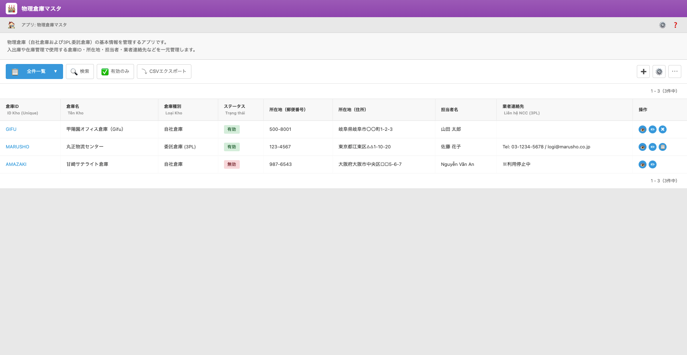

UI Spec
Warehouse / Store Master
Version 1.0 / 作成日: ________
UI Screen Specification – 物理倉庫マスタ（Store / Warehouse Master）
対象画面: 物理倉庫マスタ一覧 / 倉庫詳細
想定利用者: 在庫管理担当、倉庫担当、ロジスティクス責任者（Credie 内部ユーザー）
1. 画面の目的（Purpose）
物理倉庫マスタは、自社倉庫および 3PL 委託倉庫（Gifu, Marusho, Amazaki など）の
基本情報を一元管理するためのマスタ画面です。
- 入出庫や在庫管理で使用する「倉庫ID」「倉庫名」「所在地」「倉庫種別（自社 / 3PL）」「担当者」「緊急連絡先」を統一管理する。
- Logic Stock / Physical Stock / Orders / Channel など各種アプリから参照される「倉庫一覧」のソースを提供する。
- 無効化された倉庫を誤って新規運用に使用しないように制御する。
2. ユーザーストーリー（User Stories）
2.1 在庫管理担当
- 新しく 3PL 倉庫と契約した場合、物理倉庫マスタで「倉庫ID・名称・所在地・連絡先」を登録する。
- 倉庫統廃合や移転があった場合、既存レコードを編集し、ステータスを「無効」に切り替える。
- 「有効のみ」フィルタを使って、現時点で運用中の倉庫だけを一覧表示する。
2.2 倉庫担当・ロジ担当
- 出荷指示や入庫手配の際、現在利用中の倉庫の住所・担当者・緊急連絡先を素早く確認する。
- 新しいチャネルやストア連携（Shopify 店舗、BtoB サイトなど）を設定する際に、紐づけ先の倉庫ID を選択する。
3. 機能概要（Functions）
- 倉庫マスタ一覧表示（絞り込み・検索・ソート）
- 新規倉庫登録・既存倉庫の編集
- ステータスによる有効 / 無効管理（一覧フィルタ「有効のみ」）
- CSV エクスポート（全件 / 現在の絞り込み結果）
- 各倉庫の詳細（住所・担当者・連絡先・メモなど）の参照
4. 画面レイアウト（Layout）
4.1 一覧画面 – 物理倉庫マスタ
倉庫マスタ一覧画面では、全ての倉庫レコードを一覧表示し、ステータス・所在地・担当者などを一目で確認できます。
上部のビュー／検索／フィルタ／CSV エクスポートは Kintone 標準コンポーネントを利用します。
| 項目名 | 説明 |
|---|
| 倉庫ID（Unique） |
倉庫を一意に識別するコード（例: GIFU, MARUSHO, AMAZAKI）。
他アプリ（Logic Stock / Physical Stock / Channel App など）から参照されるキー。
クリックすると倉庫詳細画面へ遷移。
|
| 倉庫名 |
倉庫の正式名称。例: 甲陽園オフィス倉庫（Gifu）、丸正物流センター、甘崎サテライト倉庫。 |
| 倉庫種別 |
自社倉庫 / 委託倉庫（3PL） を選択。
レポートやチャネル設定でのフィルタ条件として利用予定。
|
| ステータス |
有効 / 無効。
有効のみ一覧で使用するのが基本運用。無効は過去の倉庫（利用停止・契約終了など）。
一覧では緑（有効）・赤（無効）のバッジで表示。
|
| 所在地（郵便番号） |
倉庫所在地の郵便番号。 |
| 所在地（住所） |
倉庫の住所（都道府県・市区町村・番地・ビル名など）。 |
| 担当者名 |
その倉庫の一次窓口となる担当者。自社倉庫の場合は社員名、3PL の場合は先方担当者名。 |
| 業者連絡先 |
電話番号やメールアドレスなど、緊急時連絡に使用するコンタクト情報。
例: Tel: 03-1234-5678 / logi@marusho.co.jp、※利用停止中 などメモとしても利用可。
|
| 操作 |
詳細表示・レコード編集・削除などのアイコンボタン。
仕様上は Kintone 標準の「詳細」「編集」「削除」操作を使用。
|
4.1.1 一覧画面のツールバー
- ビュー選択（全件ビュー）: 「全件」「有効のみ」などのビュー切替。
- 検索ボックス: 倉庫ID・倉庫名・住所などを対象としたキーワード検索。
- 有効のみ（チェック）: 「ステータス = 有効」のレコードのみを表示するクイックフィルタ。
- CSV エクスポート: 現在のビュー（絞り込み結果）を CSV で出力。
- ＋ボタン: 新しい倉庫レコードの追加（標準の「新規レコード」）。
4.1.2 スクリーンショット

図1. 物理倉庫マスタ一覧画面（Warehouse / Store Master List）
4.2 倉庫詳細画面（想定フィールド）
詳細画面では、一覧で表示している項目に加えて、備考・地図リンクなどを追加できるようにします。
現段階では以下のフィールド構成を想定しています。
| 項目名 | 説明 |
|---|
| 倉庫ID（Unique） | 一覧と同じ。編集不可。 |
| 倉庫名 | 一覧と同じ。 |
| 倉庫種別 | 自社 / 3PL の区分。 |
| ステータス | 有効 / 無効。利用停止時は「無効」に変更。 |
| 所在地（郵便番号） | 郵便番号。 |
| 所在地（住所） | 住所詳細。 |
| 担当者名 | 一次窓口となる担当者。 |
| 担当者メール | 担当者のメールアドレス（任意）。 |
| 電話番号 / FAX | 代表電話・FAX 番号。 |
| 業者連絡先（自由記述） | 先方業者の代表窓口・緊急連絡先などを自由形式で記載。 |
| 備考 | 利用条件や注意事項、稼働時間帯などのメモ。 |
5. お客様に確認したい点（Questions）
- 倉庫マスタとして、上記の項目（倉庫ID / 種別 / 住所 / 担当者 / 連絡先）は十分でしょうか？ 追加したい項目はありますか？
- 「倉庫種別」の区分は「自社倉庫 / 委託倉庫（3PL）」で足りますか？ 他に区分（工場・一時保管など）が必要でしょうか？
- ステータス「有効 / 無効」の他に、運用上必要な状態（例: 一時停止・試験運用など）はありますか？
- 業者連絡先フィールドは、単一のテキストで十分か、それとも電話 / メール / 緊急連絡先を別フィールドで管理したいですか？
6. ビジネス影響（Business Impact）
- 倉庫マスタが一元化されることで、出荷・入庫・棚卸などの在庫オペレーションにおける「倉庫識別のブレ」がなくなる。
- ストア / チャネル別レポートや在庫レポートで、倉庫単位の集計が容易になる。
- 無効倉庫を利用しないようにすることで、誤出荷や誤入庫のリスクを低減できる。
7. Scope / Out of Scope
7.1 Scope
- 倉庫マスタの CRUD（登録・更新・無効化・参照）
- 倉庫ステータス（有効 / 無効）の管理と、一覧でのフィルタリング
- 他アプリからの倉庫ID 参照（リレーション用キーとして使用）
- CSV エクスポートによる外部共有
7.2 Out of Scope
- 倉庫内ロケーション（棚・列・段など）の詳細管理（Physical Stock 側で扱う）
- 倉庫ごとの在庫数量・在庫評価額の管理（在庫アプリ側で管理）
- 契約書ファイル管理や SLA 管理（必要であれば別システム・別アプリ）
8. 開発メモ（Dev Notes）
- 倉庫ID は全システムで一意になるようにバリデーションを行う（重複不可）。
- Channel App や Orders App の「出荷元」フィールドは、この倉庫マスタのレコードを参照する。
- ステータスが「無効」の倉庫は、新規受注や新規ストア設定時の選択肢から除外する想定（実装方針は後続ロジックで調整）。
- CSV エクスポートは Kintone 標準機能を利用し、追加カスタマイズは行わない（Phase 1）。
- 将来的に「倉庫グループ」や「拠点種別（工場・店舗・DC）」などを追加する拡張性を考慮し、フィールド名・コード名は汎用的にしておく。